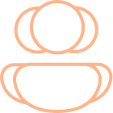
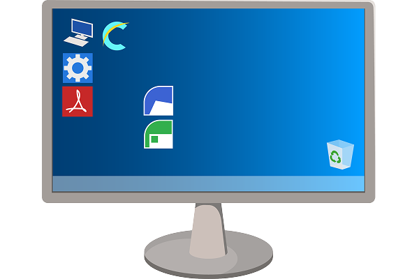
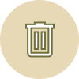
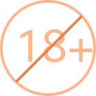
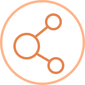

Введение
Добро пожаловать на курс «Правила допустимого использования ИТ-ресурсов». В нём вы научитесь безопасно использовать ИТ-ресурсы компании.
Крутите колесико мыши или используйте тачпад
Прокрутите вниз, чтобы продолжить


Добро пожаловать на курс «Правила допустимого использования ИТ-ресурсов». В нём вы научитесь безопасно использовать ИТ-ресурсы компании.
Крутите колесико мыши или используйте тачпад
Прокрутите вниз, чтобы продолжить
На устройствах компании ежедневно обрабатывается большое количество чувствительной корпоративной и клиентской информации, которая является желанной добычей для хакеров и мошенников, в том числе:
Чтобы защитить данные компании и клиентов на рабочих устройствах, недостаточно просто установить пароль и антивирус. Важно сформировать у себя привычки кибергигиены, которые обеспечат безопасность в цифровой среде.
Мы уже привыкли к тому, что браузеры предупреждают нас о вредоносных сайтах, а сервисы электронной почты отправляют подозрительные письма в спам. Но вся эта защита не поможет, если не соблюдать правила информационной безопасности.
Зачастую люди сами попадают в ловушку мошенников из-за своей неосведомлённости или лени.
Эти ошибки на первый взгляд кажутся незначительными. Однако они могут привести к утечке конфиденциальной информации и стать серьёзной угрозой для информационной безопасности компании.
Чтобы исключить такие инциденты, все сотрудники должны соблюдать обязательные правила, которые содержатся в данном курсе.
Объяснить принципы Политики допустимого использования информационно-технологических ресурсов.
Курс состоит из 6 разделов. Вы будете изучать их последовательно. В конце вам предстоит пройти итоговое тестирование для закрепления знаний.
Раздел 1
Любая надёжная защита начинается с фундамента. В этом разделе мы заложим его основу: изучим ключевые принципы Политики безопасности; разберёмся, с какими ИТ-ресурсами вы работаете и научимся создавать пароли, которые станут вашим цифровым щитом.
Раздел 2
Каждый сотрудник — ключевое звено в цепи корпоративной безопасности. Используя ИТ-ресурсы, вы принимаете на себя ответственность за их защиту. В этом разделе вам предстоит освоить правила «цифровой гигиены», которые помогут сохранить корпоративные данные в безопасности.
Раздел 3
Офис, дом, коворкинг — сегодня работать можно практически откуда угодно. Но в каждой среде есть свои риски. В этом разделе мы разберём, как обеспечить сохранность данных и безопасно работать в любой обстановке.
Раздел 4
Интернет и корпоративная почта — одни из главных рабочих инструментов и одновременно основные источники киберугроз. В этом разделе вы разберёте правила безопасной работы с ними.
Раздел 5
Доверие клиента — наш самый ценный актив. В этом разделе вы узнаете о том, как правильно подключаться к сетям клиентов и при каких условиях третьи лица могут получить доступ к ИТ-ресурсам и информации компании.
Раздел 6
Знать правила — это половина дела. Важно понимать последствия их нарушения и уметь действовать в критической ситуации. В этом разделе мы разберём вашу роль в обеспечении безопасности, меры ответственности и алгоритм действий при инцидентах.
Нажмите «Продолжить», чтобы перейти к первому разделу.
Безопасность на рабочем месте — важная составляющая профессиональной деятельности. Работая в компании, вы ежедневно имеете дело с различного рода ИТ-ресурсами. В этом разделе мы подробно расскажем вам об особенностях и основах безопасности при работе с ними.
Крутите колесико мыши или используйте тачпад
Прокрутите вниз, чтобы продолжить
Вы узнаете:

Какой документ регламентирует правила работы с ИТ-ресурсами
С какими ИТ-ресурсами работают сотрудники
Как создать надёжный пароль
— технологические ресурсы, которые принадлежат или арендуются компанией.
Основные принципы Политики
Это внутренний документ, который устанавливает минимальные стандарты в отношении приемлемого использования информации и ИТ-ресурсов, а также содержит правила их защиты.

Все сотрудники, партнёры и любые третьи лица, которым предоставлен доступ к информации или ИТ-ресурсам компании, должны соблюдать правила, указанные в Политике.

Несоблюдение правил Политики может привести к дисциплинарному взысканию или увольнению сотрудника. Пользователи, не являющиеся сотрудниками, могут быть привлечены к ответственности по закону и/или договору.
Виды ИТ-ресурсов
Их можно разделить на две группы: аппаратные и программные.
Нажимайте на кнопки, чтобы изучить информацию
Любое физическое оборудование: компьютеры, любые дополнительные или вспомогательные устройства, которые подключаются к компьютеру, электронные носители информации, телефоны, факсы и принтеры.

Программное обеспечение, системы и приложения.
Для работы вам выдаётся следующее оборудование: ноутбук, гарнитура, компьютерная мышь, зарядное устройство.
Сотрудники обязаны придерживаться следующих принципов работы с ИТ-ресурсами:
Нажимайте на стрелки, чтобы изучить информацию


Нажимайте на стрелки, чтобы изучить информацию

Не используйте один и тот же пароль на нескольких учётных записях. Если где-то на одном из сервисов произойдёт утечка данных и пароль попадёт к злоумышленникам, то они могут попытаться получить доступ к вашим учётным записям, включая рабочие.

Часто в обновлениях разработчики исправляют ошибки, допущенные в системе безопасности ПО. Если вы откладываете установку обновлений, устройство может подвергнуться атакам, нацеленным на известные уязвимые места в ПО.

Если для работы вам понадобится программное обеспечение, которого нет в списке разрешённых к использованию, то его установка без согласования с Руководителем службы информационной безопасности и, тем более, из неизвестного источника — запрещена.

Утечка конфиденциальной информации может произойти очень легко. Достаточно отправить данные через незашифрованные каналы связи (например, публичный Wi-Fi) или просто ошибиться при вводе адреса получателя письма.
Вы несёте полную ответственность за все действия, выполненные под вашей учётной записью. Контроль над доступом к вашему аккаунту — это ваша главная обязанность для обеспечения безопасности.
Передача кому-либо пароля или других данных вашей учётной записи строго запрещена. Даже если вы хорошо знаете собеседника, или он просит доступ для решения важной проблемы, вы не должны этого делать.
Ваши учётные данные являются конфиденциальной информацией и могут быть скомпрометированы злоумышленниками. Например, для получения доступа к вашему аккаунту злоумышленники могут использовать методы социальной инженерии.
Пароль — первый рубеж защиты информации
Пароль нужен для всего: разблокировки устройства, входа в учётную запись. Вместе с логином он может открыть доступ к конфиденциальным данным. Поэтому важно использовать надёжные пароли и тщательно оберегать их.
Создавайте для каждой учётной записи уникальный пароль.
Учитывайте эти правила при составлении пароля. Меняйте его как минимум раз в 180 дней.
Что сделает ваш пароль уязвимым:
Давайте проверим, насколько хорошо вы освоили характеристики надёжного пароля.
Перетаскивайте пароли в левый или правый столбик.
Такие пароли, как Et0B3z0p@$niyP@r0l' и ^Mim0$holPa~uk^, являются надёжными и соответствуют требованиям Политики допустимого использования информационно-технологических ресурсов.
Обратите внимание, что надёжный пароль должен отвечать следующим требованиям:
В этом разделе вы узнаете основные правила по корректному использованию аппаратных, программных и информационных ресурсов на рабочем месте. Соблюдение этих правил поможет сохранить оборудование в исправном состоянии и обеспечить защиту корпоративной информации.
Крутите колесико мыши или используйте тачпад
Вы узнаете:
Правила работы с ресурсами
Аппаратными: компьютерами, ноутбуками, телефонами, принтерами и внешними носителями
Программными: ПО и облачными сервисами
И правила работы с информацией

Ремонтировать и обслуживать рабочее оборудование могут только компании-партнёры.

Когда техника отслужила свое, компания утилизирует ее по особой политике, чтобы данные были безопасно уничтожены.
Рассмотрим требования к работе для каждого типа устройств
Нажимайте на маркеры, чтобы ознакомиться с правилами работы с аппаратными ресурсами

Сотрудники могут использовать личные устройства для работы только после согласования с руководством. Такие устройства подлежат таким же мерам защиты и контролю данных, как и корпоративная техника.
Никто не должен копировать или передавать конфиденциальную информацию с личных устройств.
Подключение личного оборудования согласуйте со службой информационной безопасности ВРК.
если вы работаете с информацией, составляющей аудиторскую тайну.
Практическое задание
Вам нужно передать клиенту большой объем данных в 20 гигабайт, использовать для передачи данных ваш корпоративный облачный сервис он отказался. У вас есть личная флешка большого объема.
Как вы поступите?
Выберите верное утверждение
Использование личных, незашифрованных носителей для передачи рабочих данных строго запрещено. Это создает огромный риск утечки, если флешка потеряется.
Использование личных, незашифрованных носителей для передачи рабочих данных строго запрещено. Это создает огромный риск утечки, если флешка потеряется.
Вы должны использовать только то программное обеспечение, которое разрешено в компании. Все необходимые для работы программы уже установлены на вашем рабочем компьютере — соблюдайте правила их использования.
Категории разрешенных программ
Нельзя устанавливать программы из сторонних источников, а также запрещается менять настройки оборудования и программ, уже установленных на компьютере.
Если у вас не работает какая-то программа, или нужно изменить настройки — лучше сразу обратиться в IT Service Desk. Так вы избежите лишних проблем и сохраните защиту своих данных.
Запрещено загружать, устанавливать или запускать программы, предназначенные для:

наблюдения за сетевой активностью;
прослушивания сетевого трафика;
проведения любого технического анализа;
удаленного подключения к сторонним ресурсам.
Исключение: получено согласование Руководителя службы информационной безопасности.
Запрещено использовать сторонние облачные сервисы для хранения или передачи данных компании и её клиентов

Исключение: получено одобрение Руководителя службы безопасности, а также письменное согласие клиента (например, в договоре).
Практическое задание
Вы работаете над новым проектом, и для работы вам необходима программа, которой нет в Software Center.
Какие шаги вы предпримете для установки и использования этой программы на вашем корпоративном компьютере?
Выберите несколько вариантов ответа.
Вы продемонстрировали ответственный и безопасный подход к установке ПО, следуя всем корпоративным процедурам.
Подумайте, что нужно сделать, чтобы избежать непредсказуемых последствий при самостоятельной установке программ.
Онлайн-конвертеры — это сервисы, которые позволяют преобразовывать файлы из одного формата в другой без загрузки или установки программного обеспечения.
Они могут работать с разными типами файлов: видео, документами, изображениями или аудио.
Практическое задание
Сотруднику было нужно срочно подготовить договор о предстоящем слиянии компаний, представив его в формате PDF. Как поступить?
Выберите несколько вариантов ответа.
Сотрудник поступил правильно, не допустив утечку конфиденциальных сведений за пределы компании.
Подумайте, что еще можно сделать для предотвращения рисков информационной безопасности.
Сотрудник воспользовался внешним конвертером. На следующей неделе о предстоящей сделке стало известно, в результате чего сделка сорвалась, компания понесла репутационный ущерб.
Оказалось, что конфиденциальные данные утекли с сервера онлайн конвертера:
При выполнении своих обязанностей сотрудники ВРК могут работать не только в офисе компании, но и на территории клиента, из дома или в общественных местах (кафе, коворкингах и др.). Для каждого места работы есть свои особенности.
Крутите колесико мыши или используйте тачпад
Вы узнаете:
Правила безопасной работы
В офисе
Дома или в общественных местах
Во время командировки
Персональный ключ к ресурсам компании — это ваш корпоративный пропуск. Он подтверждает, что вы имеете право находиться в офисе.

Если вы видите, что в офис пытается проникнуть неизвестный вам человек, спросите, к кому и с какой целью он пришёл.

Посетители могут находиться в офисе без сопровождения только в специально отведённых зонах для встреч.
Находясь в офисе, будьте внимательны. Если вы идёте на обед, совещание, встречу с коллегой, особенно когда уходите домой, обязательно убирайте или блокируйте все носители с конфиденциальной информацией. Документ, в котором описаны правила информационной безопасности на рабочем месте, называется Политика «чистого стола».
Давайте изучим основные правила, которые помогут избежать утечки конфиденциальной информации.
Нажимайте на маркеры, чтобы узнать, какие риски раскрытия конфиденциальной информации несут разные предметы вашего рабочего стола

Если вы отсутствуете на рабочем месте (как в офисе, так и удалённо) в течение полудня или более, а также по окончании рабочего дня, убирайте все документы, папки, съёмные носители или портативные устройства с рабочего места в личный ящик или шкаф под замок, чтобы исключить их кражу.
Если вы используете ИТ-ресурсы, то, где бы вы ни работали, необходимо соблюдать требования Руководства по безопасности при удалённой работе.

Подключайте ноутбук к корпоративной сети через VPN (используйте «Cisco AnyConnect Secure Mobility Client») не реже 1 раза в 14 дней на 2 часа для получения необходимых обновлений приложений.
Исключение: когда сотрудник находится в ежегодном отпуске, больничном или по иной уважительной причине.

При переносе корпоративного ноутбука обязательно блокируйте экран, для этого используйте сочетание клавиш Win + L.
Правила работы из дома и в общественных местах
Нажимайте на вкладки, чтобы изучить информацию

Запрещено записывать пароли и хранить их на видном месте! Это влечёт риск несанкционированного доступа к системам компании и компрометации данных сотрудников и клиентов.

Во время важных переговоров отключайте «умные» гаджеты с функцией записи голоса.

Не оставляйте конфиденциальные документы в зоне доступа третьих лиц, в том числе родственников или друзей. Если данные на бумажном носителе больше не нужны, уничтожьте распечатки, предварительно измельчив их так, чтобы информация не была читаемой.
Не оставляйте корпоративные аппаратные ресурсы (например, ноутбук) без присмотра в общественных местах. Всегда следите за окружающей вас обстановкой.

Не используйте внешние электронные носители информации в общественных местах. Это небезопасно.

Вы всегда должны знать местонахождение ноутбука и скрывать его от посторонних глаз.

Храните устройства с конфиденциальными данными запертыми и в безопасном месте. Если нет безопасного места, не оставляйте устройство без присмотра.
В командировке применяйте те же правила безопасности, что и при удалённой работе.
Практическое задание
Вы едете на поезде в командировку, и вам нужно ненадолго выйти. Ваш ноутбук стоит на столе в купе. Какое действие будет самым безопасным?
Выберите один вариант ответа
Ваше решение полностью соответствует правилам безопасности. Всегда держите корпоративные устройства при себе.
Оставлять ноутбук без присмотра, даже на короткое время, очень рискованно. Подумайте, что может случиться, пока вы отсутствуете.
Работа в интернете требует чётких правил и понимания принципов коммуникации, чтобы обеспечить безопасность, продуктивность и комфорт для всех сотрудников.
Крутите колесико мыши или используйте тачпад
Вы узнаете:
Какие сайты и приложения нельзя открывать с корпоративных устройств
Как пользоваться электронной почтой и проводить онлайн-конференции
Как безопасно работать с ИИ
При использовании корпоративных ИТ-ресурсов для доступа в Интернет нужно соблюдать законы и не вредить репутации компании ВРК.
Запрещено заходить на:

Сайты порнографического содержания
Ресурсы с незаконной информацией или призывами к незаконным действиям.

Любые сайты, которые могут нанести ущерб репутации компании.

Другие опасные сайты. Если сайт заблокирован службой безопасности, вы увидите специальное уведомление в браузере.
Любое из этих действий является нарушением.
При скачивании файлов с внешних сайтов будьте внимательны и следите за тем, чтобы на ваше устройство не попал вредоносный код.

Если вы подозреваете, что на ваше устройство попал вирус, немедленно обратитесь в Службу информационной безопасности.

В процессе переписки всегда должен быть чётко указан отправитель.
При отправке сообщения от имени другого пользователя в тексте должно присутствовать примечание (например, «это сообщение отправлено от имени [имя автора].»)

Нельзя создавать чаты, каналы или группы с названием компании.
Для коммуникации в бизнес-целях используйте только те средства связи, которые утверждены в ВРК.

К таким сервисам относятся: Exchange/Outlook, Mail.ru.

Будьте осторожны, когда открываете вложения или скачиваете файлы, чтобы избежать вредоносного ПО.

Перед отправкой всегда проверяйте, правильно ли вы ввели адрес получателя. Всегда указывайте, кто отправитель. Если пишете от имени коллеги, укажите это в адресате.
Не отправляйте служебную информацию тем, кому она не предназначена. Не удаляйте из писем стандартный текст об ограничении ответственности (дисклеймер).
Нажимайте на вкладки, чтобы изучить информацию
Никогда не вводите в ИИ‑сервисы: персональные данные, коммерческую тайну, внутренние документы, пароли, платёжные реквизиты, данные клиентов или партнёров.
Исключайте из запросов имена, названия компаний, проекты, суммы, даты и иные идентифицирующие детали. Используйте обобщения и абстрактные примеры.
Уточните:
При работе с ИИ используйте аккаунты, не связанные с компанией. Не привязывайте корпоративную почту.
ИИ может генерировать ошибочные или вымышленные данные («галлюцинации»). Всегда верифицируйте факты, цифры, ссылки и рекомендации, особенно в критически важных задачах.
Используйте ИИ только в рамках Политики «Использование искусственного интеллекта».
Загружать любую конфиденциальную информацию во внешние нейросети без разрешения руководителя службы безопасности и лидера проекта.
Создавать или использовать вредоносное ПО, вирусы и дипфейки: поддельные изображения, аудио или видео.
Практическое задание
Сотрудник подготовил для важного клиента персональное поздравление с использованием видеозаписи, на которой известный актёр обращается к руководителю клиента по имени. Запись была создана с помощью технологии «дипфейк» (искусственного интеллекта для подмены лица и голоса). Ваши действия?
Выберите верное утверждение
Создание и использование дипфейков в компании запрещено. Нужно выбрать другой формат поздравления, который не нарушает политику и законодательство.
Дипфейки могут нарушить закон и репутацию компании. Перечитайте правила работы с ИИ и попробуйте снова.
Грамотная работа с клиентами помогает сохранять доверие к компании и поддерживать высокий уровень удовлетворенности.
Крутите колесико мыши или используйте тачпад
Вы узнаете:
Алгоритм работы при первичном обращении
Виды услуг и прав доступа
Правила этики и поведения
При поступлении заявки на организацию похорон применяются следующие правила:
Попросите заказчика изложить свои пожелания и предоставьте полную информацию о гарантированном перечне услуг по погребению на безвозмездной основе. Выясните наличие льгот и вероисповедание усопшего для соблюдения обрядовых традиций.
Передайте запрос диспетчеру для проверки наличия мест на кладбище или времени в крематории. Согласуйте действия с администрацией морга и органами ЗАГС для получения необходимых справок.
Специалист должен оценить риски, связанные с транспортировкой (груз 200, инфекционные заболевания), и принять решение о необходимых мерах безопасности. Все эти условия должны быть зафиксированы в договоре.
Специалисты оформят заказ-наряд (договор), где четко прописаны услуги, цены и ответственность сторон. Без подписанного договора приступать к организации похорон запрещено.
Вы находитесь в квартире заказчика. Родственники в состоянии аффекта просят срочно забрать тело в морг «прямо сейчас», минуя вызов экстренных служб (полиции и скорой), аргументируя это тем, что «человек долго болел, все очевидно». Они предлагают доплатить за скорость наличными без квитанции.
Выберите одно верное утверждение
Вы вежливо, но твердо объясняете порядок действий: сначала вызов служб 102 и 103 для констатации смерти, только после этого — вывоз тела. Вы оказываете психологическую поддержку, но действуете строго по регламенту.
Этот вариант действий приведет к нарушению законодательства (УК РФ) и санитарных норм. Перевозка тела без констатации смерти врачом и осмотра сотрудником полиции запрещена.
Клиентам доступны два варианта организации похорон. Агент обязан проинформировать о обоих вариантах (ФЗ №8 «О погребении и похоронном деле»):
Навязывание платных услуг взамен гарантированных законом запрещено. Отказ от гарантированного перечня должен быть оформлен письменно.
Клиент просит организовать подзахоронение в родственную могилу на закрытом кладбище, но у него нет документов, подтверждающих родство. Он просит «договориться на месте» с копщиками, уверяя, что привезет документы позже.
Выберите все верные утверждения
Вы объясняете клиенту необходимость документального подтверждения родства. Предлагаете помощь в быстром поиске документов в архивах ЗАГС или предлагаете альтернативный вариант — новое место на открытом кладбище.
Нарушение ФЗ «О погребении». Захоронение без разрешения администрации кладбища и подтверждения родства является незаконным и может привести к эксгумации.
При работе с родственниками умершего необходимо соблюдать строгие этические нормы:
Нажимайте на кнопки, чтобы изучить информацию
Агент должен соблюдать деловой дресс-код (преимущественно темные тона), иметь опрятный вид.
Запрещено использование агрессивных методов продаж. Общение должно строиться на принципах сочувствия, вежливости и сдержанности.
Агент обязан сохранять в тайне информацию о личной жизни семьи усопшего и обстоятельствах смерти, а также не разглашать персональные данные заказчика третьим лицам без разрешения.
Любое действие с телом умершего (перемещение, подготовка к прощанию) начинается только после получения разрешения от родственников и оформления соответствующих документов.
Нажимайте на вкладки, чтобы изучить информацию
После проведения церемонии (погребения или кремации) агент обязан подписать с заказчиком Акт выполненных работ.
Грамотная работа с клиентами помогает сохранять репутацию агентства и обеспечивает выполнение профессионального долга в соответствии с высшими стандартами качества.
Каждый сотрудник компании несет личную ответственность за правильное и безопасное использование рабочих IT-ресурсов. Важно не только соблюдать правила, но и точно знать, как действовать, если произошел инцидент информационной безопасности.
Крутите колесико мыши или используйте тачпад
Вы узнаете:
Что считается инцидентом безопасности
Какая ответственность предусмотрена за нарушение правил
Что делать, если произошел инцидент безопасности
Нажимайте на вкладки, чтобы изучить информацию
Вы потеряли рабочий ноутбук, телефон, флешку или даже печатные документы. Сюда же относится ситуация, когда вы подозреваете, что к этим данным мог получить доступ кто-то посторонний.

Вам кажется, что ваш пароль, токен или другой ключ доступа к системе украли или могли узнать посторонние.

Компьютер ведёт себя странно, вы получили подозрительное письмо или файл, который вызывает сомнения.
Вы узнали, что в какой-то одной из IT-систем возникла уязвимость.

Вы узнали об инциденте безопасности у клиента, который может как-то затронуть IT-инфраструктуру компании ВРК.
Любое другое нарушение действующих правил и политик компании.
Если произошло одно из этих событий, немедленно сообщите об этом в службу информационной безопасности.
Если в ходе проверки выяснится, что инцидент произошел по вине одного из сотрудников, то его могут привлечь к ответственности.
Нарушение правил Политики допустимого использования информационно-технологических ресурсов — это серьезный проступок. В зависимости от тяжести последствий, он может повлечь за собой:
Поздравляем с успешным завершением обучения! В этом курсе вы освежили и закрепили ключевые принципы, которые помогают защитить ИТ-ресурсы компании, данные клиентов, корпоративную и личную информацию.
Крутите колесико мыши или используйте тачпад
Вы несете прямую ответственность за защиту всех IT-ресурсов, с которыми работаете. Основа основ — это использование надежных и уникальных паролей для каждой учетной записи.
Ваше рабочее место — это зона, где сосредоточена конфиденциальная информация. Поэтому всегда блокируйте экран, уходя от компьютера, убирайте документы в запираемый ящик и используйте защитные пленки на экране в общественных местах.
Для работы используйте только корпоративные устройства, одобренное программное обеспечение и защищенные сети. Никогда не используйте личные девайсы для хранения рабочих данных и не подключайтесь к общественному Wi-Fi для их передачи.
Конфиденциальная информация никогда не должна покидать периметр компании. Запрещено загружать ее во внешние сервисы (включая ИИ), пересылать через публичные мессенджеры или обсуждать в соцсетях.
Любое подключение к сети клиента или установка его ПО требует формального разрешения. Помните о правиле «одной сети»: запрещено одновременно подключаться к внутренней сети компании и внутренней сети клиента.
При малейшем подозрении на инцидент информационной безопасности, от потери ноутбука до получения странного письма, ваша главная задача — немедленно сообщить об этом в службу ИБ.
И помните, что
Лучший файрвол — не программа, а сотрудник,
который руководствуется правилами информационной безопасности прежде, чем предпринять действие.